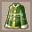
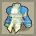
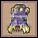
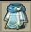

ชุดหอกเวล.75 หาจากไหนคะ
หาไม่เจอค่ะ
ใครรู้บอกทีค่ะ
ขอบคุณ
ใครรู้บอกทีค่ะ
ขอบคุณ
http://eco.froztic.in.th/archive/ecofanclub/
http://eco.froztic.in.th/archive/ecofanclub/viewtopic.php?f=23&t=79414
-คนหน้าตาดี- เขียน:ชุด Level 70
ทุกอาชีพ
ขายที่เมือง Morg City
Kakutou Cloth(Green) 70,000G
Kakutou Cloth(Red) 70,000G
ขายที่ Waterlayer
Titania Suit(M) 77,000G
Titania Suit(W) 77,000G
สาย Spell User กับ Fighter
บันไดทางเชื่อมที่ชั้น 12 ไปชั้น 17
Lord Mail(Purple) 83,000G
Lord Mail(Light Blue) 83,000GBatez Robe(W)(Blue) 75,000G

Batez Robe(M)(Blue) 72,000G
Batez Robe(M)(Balck) 72,000G
-คนหน้าตาดี- เขียน:ชุดประจำอาชีพ LV 65
เงื่อนไขในการทำ
เลเวลตัวละคร 60 ขึ้นไป
1.ไปเมืองเหนือ เข้าไปหาราชินี จะได้รับ Queen Key มา
2. เดินออกจาห้องราชินีไปมุมขวาล่างของ"ห้องก่อนถึงห้องราชินี"จะเจอ NPC เฝ้าห้องสมบัติ กดเลือกเข้าห้องสมบัติ จะเจอหีบ 4 หีบ เลือกมา1หีบ เปิด จะได้ ยาชุบ 1ขวด
3.ออกจากห้อง คุยกะ npc รับเควส ตามล่าหา Mini-Do ใช้เควสพ้อย 3 พ้อย เวลาไม่จำกัด
4.ไปตามล่าหา Mini-Do ในดันเหนือ เลือด 112144 (เลือดไม่หมดหลอดแต่จะตายตอนเลือดถึงตัว M ในชื่อมัน) เมื่อมันตายจะระเบิดตัวเอง ทำความเสียหายราวๆ 2-3พัน
เควสจะสำเร็จถ้ามีคนรอดอยู่อย่างน้อยคนนึง(คนในปาร์ตี้และรับเควสเหมือนกัน)
ถ้าตายทั้งหมดควสจะไม่สำเร็จ และถ้าให้คนในตี้ที่ไม่ได้รับเควสไปตีเปิดก่อนจนตายเควสก็จะไม่สำเร็จ
5. เมื่อเสร็จแล้ว กลับไปส่งเควสที่เดิมจะได้ Queen Key มา 1 ดอก เข้าไปเปิดกล่อง เลือกมา 1 ใบ โดยกล่องที่เปิดนั้นจะได้ของที่ต่างกันไปดังนี้
Ketel Treasure จะได้หมวก
Tefereth Treasure จะได้เสื้อส่วนบน ถ้าอาชีพที่ใส่ชุดแบบ One-Piece ก็เปิดกล่องนี้
Yesot Treasure จะได้กางเกง [คลาส Archer จะได้กระบอกธนู]
Malkut Treasure จะได้รองเท้า
-คนหน้าตาดี- เขียน:เควสชุดประจำอาชีพ LV.75
เงื่อนไข : Technical Job LV.30 ขึ้นไป [สามารถทำตอนที่เป็น Expert Job ได้ถ้า Technical LV.30 ขึ้นไป]
รับเควสกับ Madam ซึ่งอยู่ทางตะวันตกเฉียงใต้ของ Uptown
ทำเควสให้สำเร็จแล้วกลับมารับเควสใหม่อีกครั้ง
เมื่อรับเควสเสร็จแล้วเราจะได้่กุญแจ Flying Garden มา ให้เราคุยกับ Madam อีกครั้งเพื่อขึ้นไป
พอขึ้นมาแล้วจะเห็น Cococo กับ Cocko ยืนอยู่ตรงกลาง โดยให้เรานั่งรอ สามนาที
เพื่อนให้เควสล้มเลว เมื่อคุยกับ NPC บนนั้นแล้วก็จะวาปลงมาที่ที่รับเควสและก็จะสามารถเปิดชุดประจำอาชีพ LV.75 ได้แล้ว
โดยชุดที่ขายจะมีเพียงของสองอาชีพเท่านั้นคือ
อาชีพที่เราเป็นอยู่ กับ อาชีพที่คู่กับเรา
Bounty Hunter <---> Dark Stalker
Commando <---> Gunner
Sage <---> Enchanter
Bard <---> Necromancer
Machinery <---> Marionest
Treasure Hunter <---> Gambler